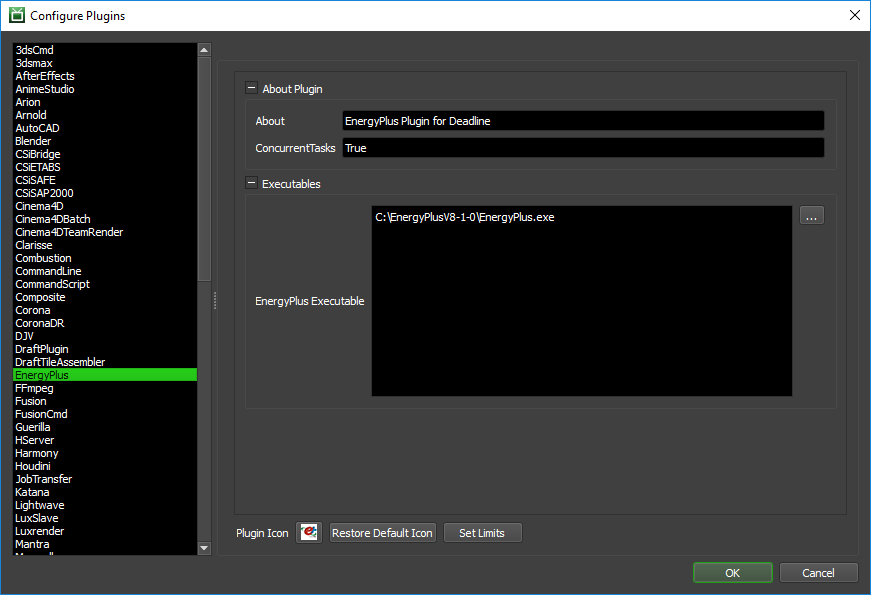

EnergyPlus¶
Job Submission¶
You can submit EnergyPlus jobs from the Monitor.
Submission Options¶
The general Deadline options are explained in the Job Submission documentation. The EnergyPlus specific options are:
EnergyPlus IDF File(s): The EnergyPlus IDF file(s) to be processed.
Weather EPW File(s): The Weather EPW File(s) to be referenced (Optional).
Override Output Directory: If this option is enabled, an output directory can be used to re-direct all processed files to.
Build To Force: You can force 32 or 64 bit processing with this option.
Submit File(s) With The Job: If this option is enabled, the data file(s) will be submitted with the job, and then copied locally to the Worker machine during processing.
EnergyPlus Post-Process Options are:
../ReadVarsESO.exe Max.Columns: Limit the maximum number of columns used when calling readVarsESO.exe.
Execute ../convertESOMTR.exe: Execute the convertESOMTR.exe application as a post-process.
Execute ../CSVproc.exe: Execute the csvProc.exe application as a post-process.
EnergyPlus Processing Options are:
Multithreading: If enabled, EnergyPlus simulations will use multithreading. Ignored if Concurrent Tasks > 1.
Pause Mode (DEBUG only): Only for Debug purposes. Will PAUSE the program execution at key steps.
EnergyPlus Other Options are:
Include Data File: If enabled, the output zip file will contain the data file OR if outputting to a directory path, the data file will be included.
Compress (ZIP) Output: Automatically compress the EP output to a single zip file.
Plugin Configuration¶
You can configure the EnergyPlus plugin settings from the Monitor. While in power user mode, select Tools -> Configure Plugins and select the EnergyPlus plugin from the list on the left.
Note, if the executable supports a MAJOR.MINOR.REVISION (9.0.123) numbering system in its path, then you will need to configure the explicit exe path to the particular revision that you have installed on your machines. Deadline does not track every possible revision available or indeed where it might be custom installed to, so a studio should verify their exe paths are correct for each application version they choose to use with Deadline. Multiple exe paths can still be declared and the first one that is found on a particular Worker on a particular platform will be used from the exe list.
Executables
EnergyPlus Executable: The path to the EnergyPlus executable file used for simulating. Enter alternative paths on separate lines.
FAQ¶
Currently, there are no FAQs for this plugin.
Error Messages and Meanings¶
This is a collection of known EnergyPlus error messages and their meanings, as well as possible solutions. We want to keep this list as up to date as possible, so if you run into an error message that isn’t listed here, please visit the Thinkbox Help Centre and let us know.
Currently, no error messages have been reported for this plugin.

{kind=link}
{kind=link}
{kind=link}